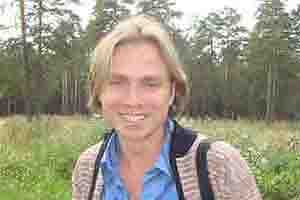
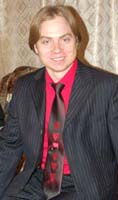
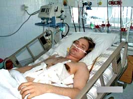

| Давид Кaрман |
|    |
История Давида Кармана
http://baptistyouth.ru/news/detail.php?ID=3281 Дата: 28.12.2006 С 16-го декабря и по сегодняшний день протестантское русскоязычное сообщество объединено в молитвенной нужде о здоровье брата Давида Кармана из Новосибирске. Вечером накануне 16-го на него было совершено нападение – его знакомый выстрелил в него дробью из двуствольного ружья в упор. Информация об этом попала в Интернет через сайт молодёжного служения РСЕХБ (www.BaptistYouth.ru) в течение нескольких часов была опубликована на других порталах христианского русскоязычного Интернета: www.molitva.ru, www.titel.ru, www.baptist.org.ru. Сегодня 28 декабря есть возможность, опираясь на источники близкие к Давиду, восстановить целостную картину. Давид – один из молодёжных служителей Российского союза ЕХБ в Новосибирске – ухаживал за человеком с психическими расстройствами, который жил в области. 15-го декабря он позвонил Давиду и попросил его приехать и привезти ему сахар. Когда Давид приехал, этот человек без слов выстрелил в него с крыльца в упор. «Слава Богу что с ним был брат, - рассказывает Остахов Виктор, другой молодёжный лидер из Новосибирска. – «Наш Давид еще сумел сам дойти до машины 10-15 метров, вот за 10 минут долетели – а место это отдаленное от города». После этого начался полный переживаний «больничный» период истории. В больнице, куда доставили Давида, он перенес шестичасовую операцию. Потом говорили, что после таких операций не выживают, так что Господь совершил чудо, по молитвам своих детей! 19-го декабря Давид пришел в сознание, но в этот день его организм все ещё находился на поддержке аппаратов. А на следующий день его брат Виталий поделился добрыми новостями: "Давид пришел в себя", - рассказывает его брат Виталий, – «Его отключили от аппарата искусственного дыхания – так как дышит сам. Бог оказывает свою милость. Просьба молиться так же за родителей - сами понимаете, большие переживания». А 26-го сайту www.BaptistYouth.ru сообщили, что у Давида снова отказали лёгкие! Сейчас его жизнедеятельность снова поддерживается аппаратами (лёгкие). В общении с Остаховым Виктором 28 декабря один из сотрудников союза узнал, что Давид пошел на улучшение, но раны дают о себе знать: температура «скачет» до 40 градусов, воспалительные процессы. На операции 26-го декабря 8-ую операцию – удалили 4 гангрены. Сегодня Давид Карман в больнице, человек, который в него стрелял – в заключении, а все мы – кто знает об этой ситуации и верит в Бога – призваны молиться о восстановлении Давида. 28 декабря 2006 год, Москва Автор: Иван Апатов, координатор СМИ Молодёжного отдела Российского союза ЕХБ Источник: специально для www.BaptistYouth.ru |
Открытое письмо Ярослава Гатрич, друга Давида
Кармана
http://www.baptistyouth.ru/news/detail.php?ID=3325 Дата: 16.01.2007 С момента реанимации Давида Кармана, мы продолжаем наблюдать за его здоровьем и молиться. За это время к молитве за него присоединились верующие из других конфессий и стран. Сегодня мы публикуем открытое письмо Ярослава Гатрич, друга Давида, который живет в Канаде. Также мы размещаем фото Давида, которое было сделано за две недели до того, как он был госпитализирован. Дорогие друзья! Всем, кто молились и продолжают молиться за Давида Кармана! «... Если я пойду и долиною смертной тени, не убоюсь зла, потому что Ты со мной; Твой жезл и Твой посох – они успокоивают меня». Псалом 22:4 На долю Давида выпали большие испытания. Хочу сказать, что все люди, искренне любящие Господа, проходят в этой жизни тяжелые, порой очень тяжелые испытания. Когда я смотрю на фотографии, сделанные в реанимации, после огнестрельного ранения, то не могу поверить, что это – Давид Карман, что это именно с ним случилась такая беда. Давид, – который горел любовью для Господа и для церкви, Давид, – дедушка которого, Корней Корнеевич Крекер, скитался по тюрьмам за веру в Иисуса, Давид, – отец которого, имея семью из десяти детей и постоянно зарабатывая на жизнь своими руками, неустанно трудился пастором в церкви на протяжении двадцати лет, и это с ним случилось такое? Почему, Господи? Почему какой-то ненормальный неверующий человек выстрелил в Давида? Зачем такие тяжелые испытания ему, молодому парню, который так горел для Господа? Зачем такие испытания его родным и близким, которые и так уже натерпелись, настрадались в этой жизни? Я не могу ответить на этот вопрос. Может, и для нас, узнавших о беде нашего брата по крови Иисуса, – это тоже испытание. Мы заметили, что когда мы поддерживаем Давида молитвой, ему становится лучше. Вот уже четвертую неделю родные, близкие, члены церкви и, даже неверующие соседи, в постах и молитвах стоят перед Господом, поддерживая жизнь Давида. Но люди есть люди, они могут уставать, утомляться. Сегодня они нуждаются в том, чтобы их руки кто-то поддерживал, как когда-то поддерживали руки Моисея. У них есть вера в выздоровление Давида. Дорогой друг! Готов ли ты поддержать руки веры за своего брата по крови Иисуса? Может, Господь хочет испытать тебя, насколько ты любишь братьев своих по вере? Говорят, что только те, кто пережил сам испытания, может сочувственно понять того, кто проходит испытания. Я верю, что любовь Христа, живущая в нас, даст нам те же чувствования, что и в Иисусе Христе есть. Давид верит, что Любящий Господь полностью исцелит и восстановит его. Он благодарен за все ваши молитвы, дорогие! Я – как врач-хирург, могу сказать, что с такими ранениями обычно не выживают. Разве не чудо, что Давид уже идет на поправку, хотя еще много дроби осталось в его теле, у него много осложнений и, возможно, ему предстоят еще операции... Сейчас он находится в интенсивной терапии и нуждается в реабилитации всего организма. А для его реабилитации, его восстановления необходимо будет самое меньшее двадцать тысяч американских долларов. В Сибири, где вся семья с десятью детьми живет на зарплату отца, и все дети учатся, собрать такую сумму, двадцать тысяч, практически, невозможно. Дорогие братья и сестры в Господе нашем Иисусе Христе! Мир вам! Если ваше сердце, узнав, что случилось с вашим братом, расположилось стать а проломе за Давида, то присоединяйтесь к молитве, поддерживайте руки родителей Давида – Виталия и Любу Карман. И продолжайте молиться. 16 января 2007 год Канада |
Новости о брате нашем в Господе Давиде Кармане
http://www.baptistyouth.ru/news/detail.php?ID=3379 Дата: 17.02.2007 Наша молитва о брате Давиде Кармане не прекращается. В редакцию нашего сайта приходят письма от его близких – невесты Яны, родного брата Виталия и отца Яны – Ярослава Гатрича. С их согласия, мы публикуем сообщения, которые они присылают нам, а также самого Давида. Яна Гатрич, невеста Давида: «Он сейчас чувствует себя лучше. Правда, из-за массивного ранения и частичной резекции поджелудочной железы, там продолжаются выделения, и поэтому ему не снимают дренаж, который жидкость отсасывает. Кроме этого, у него недавно чистили гной в другом месте, возле легкого, задетого дробью. Ведь когда случился выстрел, то материя от пуховика и перья, – все вошло в тело вместе с дробью и пороховыми газами – и у него началось нагноение там. Давид сам это обнаружил, надавил на это место и оттуда пошел гной. Врачи испугались, начали все гнойники вычищать из этой области. Сказали, что, может, надо будет частично вырезать ребра на том месте. Но, слава Богу, обошлось без этого. Сейчас у него и температура нормализовалась. Он ходит, встает сам, умывается, разогревает пищу. Он очень благодарен за все молитвы, и поддержку родных и друзей! И еще, он уже, конечно, хочет быть независим от больницы, врачей, быть дома, быть в церкви! Просьба молиться о его поджелудочной железе. Если она скоро не заживет, придется делать еще одну операцию, а он их уже 10 перенес, и это будет дополнительная травма для организма. Когда долго не заживает железа, может образоваться панкреатит, что может оказаться для Давида смертельным. Или начаться сахарный диабет, что также его обречет на тяжелые испытания! Я читала о гибели украинского депутата Евгения Кушнарева в результате огнестрельного ранения. У него была также повреждена поджелудочная, но он прожил только сутки. Возможно, ему не хватило этой могущественной Скорой Помощи, которую получил Давид по вашим молитвам... Давид собирался на Всероссийскую конференцию молодёжных лидеров, которая в это время как раз проходит в Москве. Такие конференции – это очень важное и нужное дело. Как учиться привлекать к царству Божию неверуюших людей, чтобы это не было религиозностью, а живой верой? Черпать и делиться братским опытом!» Ярослав Гатрич, отец невесты Давида: «Отвечая ему, Иисус спросил: чего ты хочешь от Меня? Слепой сказал Ему: Учитель! Чтобы мне прозреть. Иисус сказал ему: иди, вера твоя спасла тебя.» (Мрк.10:51-52) «Трудно представить себе, что Иисус не знал, чего хочет от Него слепой Вартимей. Но ведь для чего-то Иисус задал этот вопрос... Из этого отрывка Священного Писания я сделал для себя вывод, что для Христа важны две вещи: Он хочет, чтобы приходя к Нему, мы конкретно называли по имени свои проблемы. И второе: Он хочет воспитать в нас веру. Спасающую веру. Из этого можно сделать еще один вывод: если Христос хочет воспитать в нас спасающую веру, – а мы знаем, что без веры угодить Богу невозможно, – значит тот, кто противостоит Богу, приложит все силы, чтобы сломить нашу веру. Дорогие друзья! 12 февраля состояние Давида резко ухудшилось – появились сильные боли и его срочно взяли в операционную. Операция – а это уже 12-я операция за последние 8 недель – на этот раз по удалению спаек кишечника продолжалась 5 (пять!) часов. Родные и друзья все это время были в молитве перед Иисусом. Они просили Иисуса о том, чтобы Давид выжил, чтобы вера его и упование его на Иисуса не поколебались. Давид по натуре своей – исключительно жизнерадостен и оптимистичен. Он очень любит Господа и верит в Его спасительную любовь. У Давида есть невеста и еще в августе 2006 года они запланировали соединить свои судьбы в одну летом 2007 года, но случилась беда... Давид молит Бога о быстром выздоровлении, радуется тому, что идет на поправку – но снова операция, снова тяжелое состояние, снова реанимация, снова приходится смотреть смерти в глаза... Давид проходит сегодня серьезную школу терпения и упования на Господа. Он проходит «долиною смертной тени» (Пс.22:4). Это испытание настолько серьезно, что Сам Господь спускается в эту долину со Своим дитя. Будем молить Господа, чтобы в конце этой “долины” Господь “умастил елеем голову” его в знак того, что Давид успешно прошел это испытание и сохранил спасительную веру. В первые дни реанимации многие верующие из разных общин (баптисты: регистрированные и не регистрированные, отделенные и автономные, а также пятидесятники) встали единодушно в молитве перед Господом. Верующие церкви веры евангельской по очереди все простояли в молитве всю ночь, пока Давида оперировали. Давид потерял 3 (три!) литра крови. Нужна была срочно кровь для переливания, а в больнице такого количества крови на тот момент не оказалось, и у дверей Станции Переливания Крови (СПК) образовалась огромная очередь. На СПК не оказалось достаточно посуды, чтобы у всех желающих сдать кровь для Давида, – взять ее. Многим отказали. И юноши, наши молодые братья, стояли под стенами этой станции и плакали. Мне вспоминаются слова нашего Господа Иисуса Христа: «Нет больше той любви, как если кто положит душу свою за друзей своих. Вы друзья Мои, если исполняете то, что Я заповедую вам.» (Ин.15:13-14). Господь чудно ответил на молитвы своих детей – Давид выжил! Врачи не верили, что он выживет – они просто делали свое дело. Но наш брат выжил! Слава Богу! Сегодня он уже самостоятельно передвигается по палате, строит планы на будущее. Многие раны еще не зажили, ему еще предстоят несколько операций, но он оптимист. Давид верит, что Господь восстановит его полностью и даст ему возможность самому зарабатывать себе на жизнь. А пока.... А пока он проходит сложную школу терпения. Реабилитационный путь не легкий и не короткий. По скромным подсчетам на этот реабилитационный путь ему необходимо самое меньшее 20-25 тысяч американских долларов. Семья, где десять детей и отец пастор, не получающий никакой финансовой поддержки, а только зарплату от производства, не сможет найти эти деньги, да еще в Сибири. Давид Карман: «Я благодарен Богу за Его милость и любовь. Я благодарен за молитвы моих родных и близких, моих друзей, и всех тех, кто молился все это время за меня, совершенно меня не зная. Знаю, что Господь на эти молитвы давал явный и быстрый ответ. Будем молиться за все, пока еще не разрешенные вопросы с моим здоровьем, особенно за заживление поджелудочной железы. А также обращаюсь ко всем вам со слова Апостола Петра: Благодать и мир вам да умножится в познании Бога и Христа Иисуса, Господа нашего. Как от Божественной силы Его даровано нам все потребное для жизни и благочестия, через познание Призвавшего нас славою и благостию, которыми дарованы нам великие и драгоценные обетования, дабы вы через них соделались причастниками Божеского естества, удалившись от господствующего в мире растления похотью...» Если вы желаете откликнуться на призыв помочь Давиду материально, то позвоните его отцу: Виталию Николаевичу Кa'рману. Для тех, кто будет звонить из-за рубежа: (011-7) 383-29-09-793 – домашний; (011-7) 923-249-8802 – мобильный. Для жителей бывшего Советского Союза – соответственно 383-29-09-793 и 8-923-249-8802. Через некоторое время все желающие поговорить с Давидом смогут связаться с ним по телефону, номер которого сообщим позже. Автор: Иван Апатов, координатор СМИ Молодёжный отдел РС ЕХБ Источник: По материалам писем Яны и Ярослава Гатрич |
| Дорогие братья и сестры! Прошло уже девять месяцев с тех пор, как в Давида Кaрмана выстрелили. Прошло девять месяцев, как было написано первое обращение к детям Иисуса. С благодарностью ко всем, кто откликнулся, кто принял близко к сердцу эту беду, хочу сказать, что любовь, которую дал нам Господь в сердце – победила. Давид выжил! Слава Богу! Дорогие друзья, ваши молитвы, ваши добрые пожелания в адрес Давида, ваша материальная помощь принесли благословения Давиду, его родителям, близким и друзьям. Возможно, это будет выглядеть, как очень громко сказанное слово, но вы, принимая участие в этой битве, стали участниками торжества победы Божией любви. Да благословит вас Господь и воздаст вам по обилию Его благодати. Конечно, путь выздоровления Давида был нелегким и еще не закончился. В его теле осталось еще много дроби. Две крупных дробины застряли в сердце, а также 76 дробин еще находятся в брюшной полости. Давид перенес шестнадцать операций. Его печень после стольких наркозов сильно пострадала. Теперь ему предстоит, надеемся, последняя, – очень сложная операция – реконструкция кишечника, восстановление его целостности. Бог расположил сердце одного профессора, крупного специалиста по восстановлению кишечника, взяться за эту операцию. Операцию планируют провести утром, 28 сентября, в г. Новосибирске (по канадскому времени вечер 27-го). Длится она будет около 9-ти часов. Уповаем только на силу и могущество нашего Господа. Поддержите,
пожалуйста, Давида вашими молитвами. С уважением, Ваш брат Ярослав Гатрич |
| Николай, приветствую Вас с Леночкой! У нас с Ярославом и детками все хорошо. Яночка тоже, слава Богу, закончила колледж на медсестру, И в июне этого года вышла замуж за брата из России Давида Кармана. Должно быть вы слышали о трагедии, постигшей его в декабре 2006 г. Яна как раз собиралась к нему, чтобы объявить в Новосибирской церкви и готовиться к свадьбе Но... Случилось то, что случилось.. В приложении несколько слов от Ярослава. Если бы вы могли поставить эту просьбу на Вашем сайте. Давид и в послеоперационный период также будет нуждаться в Ваших молитвах. Валентина 9/26/07 Valentina Gatrich |